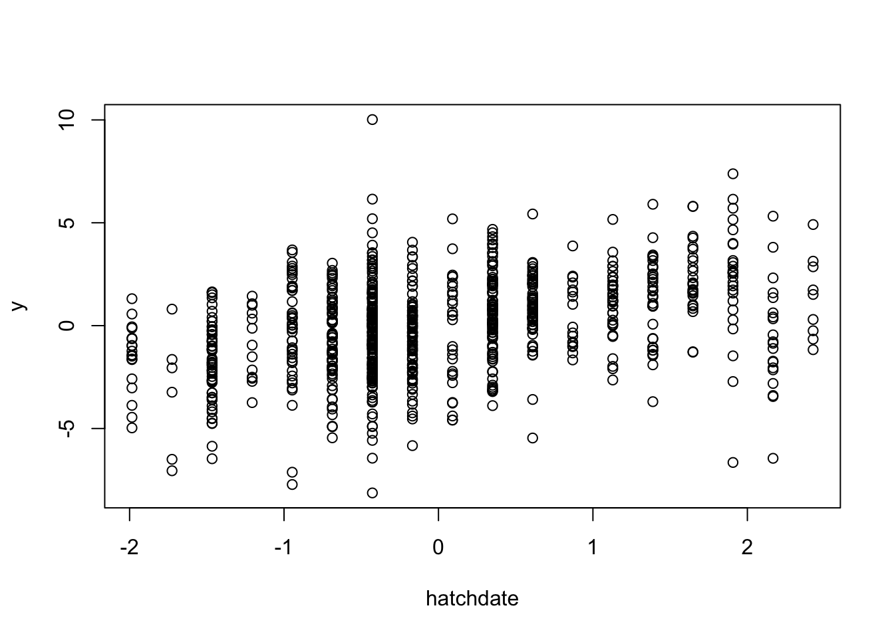

2.6 Known Predictors
We might have the situation where we don’t want to simulate a predictor, rather use existing data to simulate a response variable from. This has the advantage that any quirks of existing data (like a strange distribution) can be maintained. These predoctors can be fed into the simulate_population function, using the known_predictors argument. This argument takes a list, with one item, called predictors, a matrix or dataframe of predictors and one item called beta, with the beta values for the respective predictors. Importantly, the predictors have to be the same length as number of observations in the simulated data. We can demonstrate this using the blue tit data set that comes with the MCMCglmm package.
library(MCMCglmm)
data(BTdata)
head(BTdata)## tarsus back animal dam fosternest hatchdate sex
## 1 -1.89229718 1.1464212 R187142 R187557 F2102 -0.6874021 Fem
## 2 1.13610981 -0.7596521 R187154 R187559 F1902 -0.6874021 Male
## 3 0.98468946 0.1449373 R187341 R187568 A602 -0.4279814 Male
## 4 0.37900806 0.2555847 R046169 R187518 A1302 -1.4656641 Male
## 5 -0.07525299 -0.3006992 R046161 R187528 A2602 -1.4656641 Fem
## 6 -1.13519543 1.5577219 R187409 R187945 C2302 0.3502805 FemWe can see that in this dataset there are several continuous predictors. Here we will use “hatchdate” and “tarsus”.
squid_data <- simulate_population(
parameters=list(
observation=list(
names=c("temperature","rainfall"),
beta = c(0.5,0.3)
),
residual=list(
vcov=0.3
)
),
known_predictors = list(
predictors = BTdata[,c("hatchdate","tarsus")],
beta = c(1,2)),
N = nrow(BTdata)
)
data <- get_population_data(squid_data)
head(data)## y temperature rainfall residual_effect hatchdate tarsus squid_pop
## 1: -4.9165378 -0.5625990 0.10030679 -0.1933339 -0.6874021 -1.89229718 1
## 2: 2.3035300 0.1209723 0.59921628 0.4784615 -0.6874021 1.13610981 1
## 3: 0.5376093 -1.3383692 -1.73989839 0.1873659 -0.4279814 0.98468946 1
## 4: 0.2100531 1.9686365 1.23108581 -0.4359430 -1.4656641 0.37900806 1
## 5: -2.3160519 -1.6513145 -0.04550538 0.1394270 -1.4656641 -0.07525299 1
## 6: -2.2270834 1.0910600 -1.17908788 -0.4987767 0.3502805 -1.13519543 1plot(y~hatchdate,data)